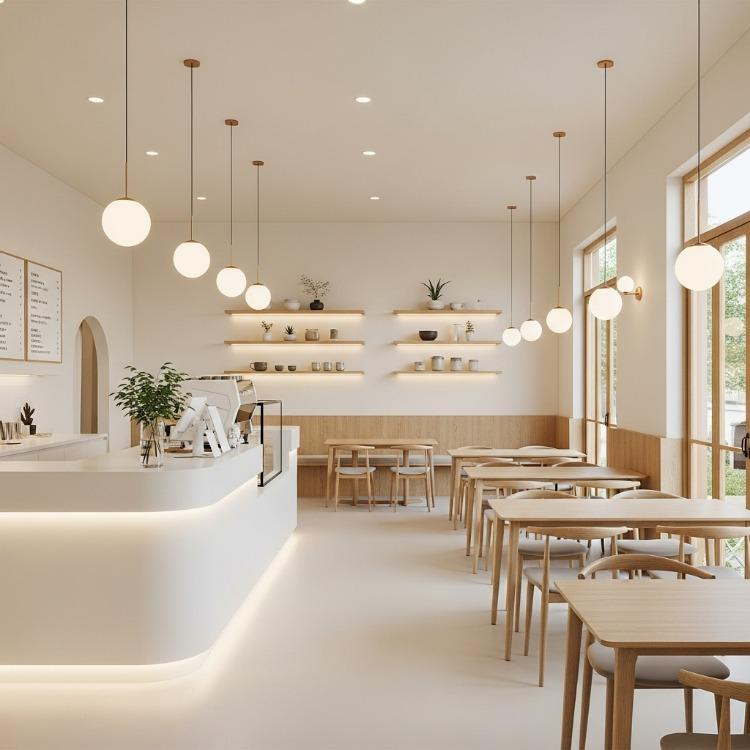

Câu chuyện của Bean & Bloom
Quán ra đời năm 2020 với mong muốn mang cà phê Việt Nam chất lượng cao đến gần mọi người trong một không gian ấm cúng.
Chúng tôi chọn hạt kỹ lưỡng, rang xay tại chỗ và pha chế bởi các barista được đào tạo bài bản.
Dịch vụ của quánVề tác giả
Nguyễn Việt Bảo
Website này do Nguyễn Việt Bảo thiết kế trong bài tập xây dựng website tĩnh responsive bằng HTML5 và CSS3.
Giá trị cốt lõi
Chất lượng
Chọn lọc từng hạt, kiểm soát từng mẻ rang.
Bền vững
Dùng ống hút giấy và ly tái sử dụng.
Cộng đồng
Nơi gặp gỡ, sáng tạo và chia sẻ.